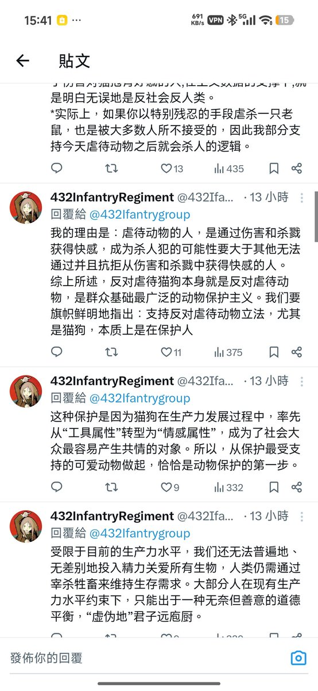

@Sledge230282 @ZhaXia123 你不明确就去想，想明白为止，别来问我，我没有给你支教的义务。
另外，一个喜欢鲜血和杀戮的人是不是有更多概率成为杀人犯，在我看来显然是有，你要硬说“实在无法明确”，那就滚

另外，一个喜欢鲜血和杀戮的人是不是有更多概率成为杀人犯，在我看来显然是有，你要硬说“实在无法明确”，那就滚

@432Ifantrygroup @ZhaXia123 关于“因为...所以...”：“虐待动物的人，是通过伤害和杀戮获得快感，成为杀人犯的可能性要大于其他无法通过并且抗拒从伤害和杀戮中获得快感的人。”禁止虐待动物并不能让虐待动物的人转变为反对虐待动物的人，我认可对虐待动物行为的展示实际是在伤害人，但这和所谓的杀人犯的关系我实在无法明确 https://t.co/OZMyescOYW